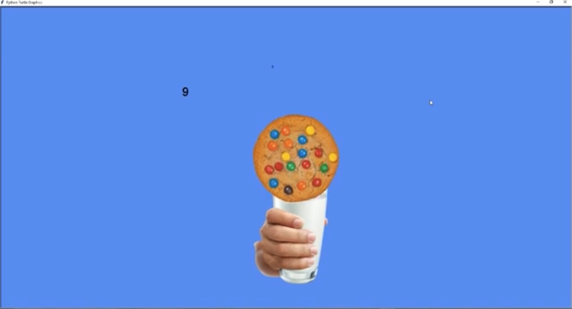

This is my Portfolio Page!
1.1.9 Project - Cake maker!
In this project, the user is allowed to input what cake layers, flavors, and frosting colors they want.
The program is interactive with the user so that they can customize their cake however they would like.

1.2.5 Project - Cookie monster!
My project was a cookie dropper project, where different cookies fall from the sky and the goal is to catch them with a glass of milk. The user can move the milk glass with their WASD keys, and gets at least one point everytime they catch a cookie. There are 3 types of cookies: each with different points. There is a 30 second timer, the user's goal is to get as many points as they can in 30 seconds!
Scratch Project - Don't Let Fred Die!
In this project, we made a platformer game and the character, Fred, has to avoid the dangerous obstacles and jump over some things to survive and get through the next level. He only has 40 seconds before he runs out of oxygen. The user can control Fred's movements by pressing the arrow keys. Fred only has 40 seconds. Good luck!
Use data files to create graphs.

Using netlogo do remix of illusions.